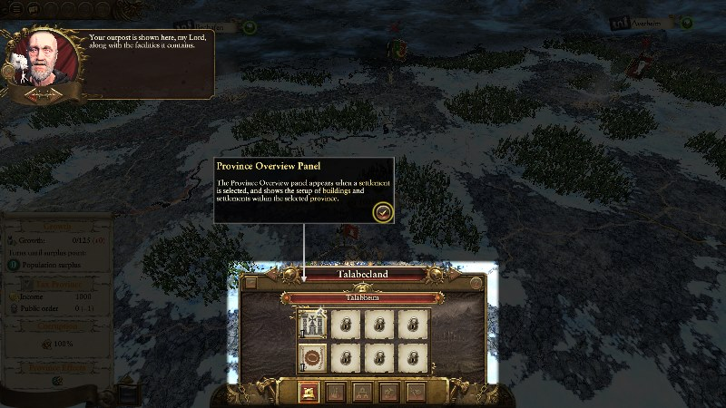

Scripted Tours
A scripted tour is a linear section of scripted gameplay where the script locks all player interaction with the game barring the minimum necessary for the player to perform a series of actions, generally with a fullscreen highlight to focus the players attention on one portion of the screen. This is most commonly used for tutorial scripting - the actions in this case would be the player acknowledging advice and text_pointer objects and clicking on UI items as they are instructed to. This scripted_tour class allows a scripted tour (or a scripted tour segment, as multiple tour objects may be strung together to form what the player might call a single 'scripted tour') to be set up relatively easily.
As an example, a scripted tour may be triggered when the player first gains a character skill point. Normal interaction is stopped at this point, with the script showing a sequence of advice to the player and compelling them to perform a series of steps (dismissing advice and/or clicking on highlighted ui buttons). Once the player has performed that series of steps then control is released back to them.
An example screenshot of a scripted tour:

This scripted tour mechanism provides a relatively easy interface to establish a fullscreen highlight around a portion of the user interface to better highlight to the player what section of the screen they should be looking at. With a fullscreen highlight visible the scripted tour mechanism also supports displaying a skip button, allowing the player to skip through tour content.
If a scripted tour is intended to be shown during live campaign gameplay then it's strongly recommended to always trigger it from within an intervention in order to control the flow of events around the tour that is triggering. Scripted tours may be triggered in battle and the frontend, but are primarily intended for use in campaign.
Action callbacks may be added to a scripted tour along with a time offset at which they should be called with scripted_tour:action. These actions are called at the supplied times when the tour is started. Multiple 'sequences' of actions may be specified for a single scripted tour, as a given tour will often have to wait for an indeterminate period for a player response before continuing - the actions that come after the player response would be laid out in a different sequence to those coming before.
Once constructed, a tour (or a particular sequence within the tour) may be started with scripted_tour:start.
When a scripted tour finishes it will trigger the script event ScriptEventScriptedTourCompleted, with the scripted tour name as the context string.
| Loaded in Campaign |
|
| Loaded in Battle |
|
| Loaded in Frontend |
|
Each scripted tour must be declared with scripted_tour:new. A name and a function to call when the tour ends (or is skipped) must be specified here.
Once declared, actions may be added to the tour with scripted_tour:action. Each action is a function to be called at some timed interval after the tour has started. It is through actions that events during the tour occur, such advice being displayed and buttons being highlighted. By specifying a sequence name when declaring actions, an action may be added to a specific action sequence within the tour. Action sequences may be used to group actions together. It's common that a scripted tour is made of several short segments of actions that commences when the player makes a certain input.
A fullscreen highlight can be added over one or more ui components during the tour with scripted_tour:add_fullscreen_highlight. A delay may be set so this highlight doesn't appear as soon as the tour starts with scripted_tour:set_fullscreen_highlight_delay.
The skip button can be shown or hidden with scripted_tour:show_skip_button, or moved around the screen with scripted_tour:move_skip_button. Functions to call if the scripted tour is skipped may be added with scripted_tour:add_skip_action and removed again with scripted_tour:remove_skip_action.
Once a scripted tour is declared and configured it may be started with scripted_tour:start. Supply no arguments to this function to start the main action sequence, or specify a name to start a particular action sequence.
Once a sequence is started it must be ended by calling scripted_tour:complete_sequence with the name of the sequence. All running sequences and the tour as a whole may be ended by calling scripted_tour:complete. Alternatively, the tour ends immediately if the player clicks on the skip button or if scripted_tour:skip is called. The tour must be ended by calling scripted_tour:complete or scripted_tour:skip after it has been started.
-
scripted_tour:new(namestring, [end callbackfunction]) -
Creates a scripted tour object. Each scripted tour must be given a unique string name and, optionally, an end callback which will be called when the scripted tour ends or is skipped.
Parameters:
1
Unique name for the scripted tour.
2
optional, default value=false
End callback.
Returns:
scripted_tourscripted tour
defined in ../../Warhammer/working_data/script/_lib/lib_scripted_tours.lua, line 81
Once a scripted_tour object has been created with scripted_tour:new, functions on it may be called in the form showed below.
Example - Specification:
<scripted_tour_object>:<function_name>(<args>)
Example - Creation and Usage:
local st = scripted_tour:new(
"deployment",
function() end_deployment_scripted_tour() end
);
st_deployment:add_validation_rule( -- calling a function on the object once created
function()
return bm:get_current_phase_name() == "Deployment";
end,
"not in deployment phase"
);
Validation rules may be built into a scripted tour using scripted_tour:add_validation_rule, to allow it to know when it can be triggered. Validation rules added to a scripted tour are checked when that tour is started with scripted_tour:start, and should any fail then the scripted tour will fail to trigger.
Client scripts may also ask a scripted tour whether it is currently valid to trigger by calling scripted_tour:is_currently_valid. Should the tour not currently be valid then a reason value, supplied to scripted_tour:add_validation_rule when the rule is established, is returned to the calling script. This can be used by UI scripts, for example, to determine whether to enable or disable a scripted tour button, and to customise its appearance (e.g. change the tooltip) to indicate a reason why the tour can't currently be triggered.
Furthermore, context change listeners may be added to a scripted tour with scripted_tour:add_validation_context_change_listener by which a scripted tour may listen for events that may indicate its validation state changing. Should a scripted tour detect that a context change has altered its validation state it will trigger the script event ScriptEventScriptedTourValidationStateChanged which can be listened for by scripts elsewhere.
-
scripted_tour:add_validation_rule(callbackfunction, valuereason) -
Adds a validation callback. The supplied function will be called when the scripted tour is triggered with
scripted_tour:start, or validated withscripted_tour:is_currently_valid, and it must return a boolean value that indicates whether the validation rule passes.
Validation rules are checked in the same order in which they are added.Parameters:
1
Validation function.
2
valueReason value. This can be a value of any type. It will be returned to scripts that call
scripted_tour:is_currently_validif this validation rule fails.Returns:
nil
defined in ../../Warhammer/working_data/script/_lib/lib_scripted_tours.lua, line 160
-
scripted_tour:add_validation_context_change_listener(event namestring, [conditionfunction]) -
Starts a listener for the supplied scripted event. Should it be received, and should the optional condition also pass, the current validation state is checked against that previously cached. If the validation state has changed then the
ScriptEventScriptedTourValidationStateChangedis triggered which scripts elsewhere can listen for and react to. This allows UI scripts that may be displaying an option to launch a scripted tour to update the state of that launch option as the game context changes.Parameters:
1
Name of script event to monitor.
2
optional, default value=true
Condition to check if the event is received.
Returns:
nil
defined in ../../Warhammer/working_data/script/_lib/lib_scripted_tours.lua, line 180
-
scripted_tour:is_currently_valid() -
Checks whether this scripted tour is currently able to trigger. If the tour is not currently valid to trigger then the reason specified when setting the rule up with
scripted_tour:add_validation_ruleis returned.Returns:
booleanvaluereason value if invalid
defined in ../../Warhammer/working_data/script/_lib/lib_scripted_tours.lua, line 216
Actions must be added to a scripted tour if it is to do anything. Action callbacks added to a tour are called by that tour once the tour is started with scripted_tour:start. Actions are added with an action time, which specifies how long the scripted tour should wait after being started before calling the action. Pending actions are cancelled when a tour is skipped or completed, so if this happens before an action is called then it will never be called.
Actions may optionally be added to a 'sequence' by specifying a string sequence name when calling scripted_tour:action. Different sequences in a scripted tour may be started by calling scripted_tour:start with the sequence name.
-
scripted_tour:action(functioncallback, numberinterval, [stringsequence]) -
Adds an action to the scripted tour to be called at a specified time after the scripted tour starts. If no sequence is specified then the action is added to the main tour sequence, otherwise the action will be added to the sequence given.
Parameters:
1
functionCallback function to call.
2
numberInterval after the scripted tour starts at which the specified action should be triggered. This should be given in seconds in campaign, and in ms in battle and the frontend.
3
stringoptional, default value=nil
Sequence to add the action to. If no sequence name is specified then the action will be added to the main sequence.
Returns:
nil
defined in ../../Warhammer/working_data/script/_lib/lib_scripted_tours.lua, line 252
-
scripted_tour:append_action(functioncallback, numberinterval, [stringsequence]) -
Adds an action to the scripted tour to be called at the same time as the last currently-registered action of the specified sequence. If no sequence is specified then the action is added to the main tour sequence, otherwise the action will be added to the sequence given. If additional actions are added after
append_actionis calledParameters:
1
functionCallback function to call.
2
numberInterval after the scripted tour starts at which the specified action should be triggered. This should be given in seconds in campaign, and in ms in battle and the frontend.
3
stringoptional, default value=nil
Sequence to add the action to. If no sequence name is specified then the action will be added to the main sequence.
Returns:
nil
defined in ../../Warhammer/working_data/script/_lib/lib_scripted_tours.lua, line 306
The scripted tour may be instructed to put a fullscreen highlight around one or more uicomponents when the tour starts. Components to highlight may be added by their path with scripted_tour:add_fullscreen_highlight. Multiple calls may be made to this function to add multiple components to highlight. The highlighting is performed with core:show_fullscreen_highlight_around_components, see documentation on that function for more information.
Should any fullscreen highlight components be added to the scripted tour then a fullscreen highlight will be placed over them when the tour starts. The creation of the fullscreen highlight may be delayed with scripted_tour:set_fullscreen_highlight_delay. Set a negative delay here to prevent the fullscreen highlight from being created automatically - in this case, external scripts may show or hide the fullscreen highlight manually with scripted_tour:show_fullscreen_highlight.
-
scripted_tour:add_fullscreen_highlight(...path) -
Specifies a component to extend a fullscreen highlight over, by elements within its string path. Supply one or more strings that specify a path to the component, read left to right.
Parameters:
1
...One or more strings specifying a path to a uicomponent
Returns:
nil
Example - Add the 'mid' component (child of 'popup_pre_battle') to the fullscreen highlight:
tour:add_fullscreen_highlight("popup_pre_battle", "mid")
defined in ../../Warhammer/working_data/script/_lib/lib_scripted_tours.lua, line 359
-
scripted_tour:set_fullscreen_highlight_delay(numberdelay) -
Sets a delay between the scripted tour starting and the fullscreen highlight being activated. If a negative number is set then the fullscreen highlight will not activate automatically - in this case client scripts may activate/deactivate it manually with
scripted_tour:show_fullscreen_highlight.
The delay should be given in seconds in campaign, but ms in battle or the frontend.Parameters:
1
numberdelay
Returns:
nil
defined in ../../Warhammer/working_data/script/_lib/lib_scripted_tours.lua, line 386
-
scripted_tour:set_fullscreen_highlight_padding(numberpadding) -
Sets a padding value in pixels between the visible fullscreen highlight and the uicomponents it surrounds. This value is passed to the underlying
core:show_fullscreen_highlight_around_componentsfunction. This should already be set to a sensible default - call this function can be used to override this.Parameters:
1
numberPadding value in pixels
Returns:
nil
defined in ../../Warhammer/working_data/script/_lib/lib_scripted_tours.lua, line 400
-
scripted_tour:set_allow_fullscreen_highlight_window_interaction([booleanallow interaction]) -
Sets whether the fullscreen highlight central window should allow interaction with the components it shows. Interaction is allowed by default, meaning components shown within the window will respond to mouse events - use this function to disable this interaction.
Parameters:
1
booleanoptional, default value=true
allow interaction
Returns:
nil
defined in ../../Warhammer/working_data/script/_lib/lib_scripted_tours.lua, line 413
-
scripted_tour:show_fullscreen_highlight(booleanshould show) -
Enables or disables a fullscreen highlight over the uicomponents previously specified with
scripted_tour:add_fullscreen_highlight. This is called automatically by the scripted tour at some point after the tour starts, unless it has been disabled by supplying a negative number toscripted_tour:set_fullscreen_highlight_delay. It may also be called by external scripts to manually enable/disable the fullscreen highlight - this isn't necessary in most cases, however.Parameters:
1
booleanshould show
Returns:
nil
defined in ../../Warhammer/working_data/script/_lib/lib_scripted_tours.lua, line 425
If a fullscreen highlight is visible then the scripted tour will display a skip button by default. The following functions control the visibility, on-screen position and functionality of the skip button.
The tour will be skippable with the ESC key if a skip button is shown, and won't be skippable if it isn't.
-
scripted_tour:get_skip_button_container() -
Creates the skip button if it has not been created before, or gets a handle to it if it has, and returns that handle. This is mainly for internal use but could feasibly be used externally. The skip button and its container will be invisible until made visible by the normal working of the scripted tour system.
Returns:
uicomponentskip button container
defined in ../../Warhammer/working_data/script/_lib/lib_scripted_tours.lua, line 559
-
scripted_tour:set_show_skip_button([booleanshould show]) -
Sets whether the skip button should be shown when a fullscreen highlight is enabled. By default the skip button is shown - use this function to suppress this behaviour.
Parameters:
1
booleanoptional, default value=true
should show
Returns:
nil
defined in ../../Warhammer/working_data/script/_lib/lib_scripted_tours.lua, line 567
-
scripted_tour:add_skip_action(functionskip action, [stringname]) -
Adds a skip action to the scripted tour, which will be called if the scripted tour is skipped (but not called if it is completed normally). An optional name may be added for the skip action, by which it may be removed later.
Parameters:
1
functionSkip callback to call if this scripted tour is skipped.
2
stringoptional, default value=nil
Name for this skip action.
Returns:
nil
defined in ../../Warhammer/working_data/script/_lib/lib_scripted_tours.lua, line 579
-
scripted_tour:remove_skip_action(stringname) -
Remove a skip action from the scripted tour by name. If multiple skip actions share the same name then all will be removed.
Parameters:
1
stringname
Returns:
nil
defined in ../../Warhammer/working_data/script/_lib/lib_scripted_tours.lua, line 603
-
scripted_tour:clear_skip_actions() -
Removes any skip actions currently associated with this scripted tour.
Returns:
nil
defined in ../../Warhammer/working_data/script/_lib/lib_scripted_tours.lua, line 620
-
scripted_tour:show_skip_button(booleanshould show) -
Manually shows or hides the skip button while the scripted tour is running. Generally this should not be called externally, as the scripted_tour will show the skip and hide the skip button automatically along with the fullscreen highlight.
Parameters:
1
booleanshould show
Returns:
nil
defined in ../../Warhammer/working_data/script/_lib/lib_scripted_tours.lua, line 627
-
scripted_tour:move_skip_button(booleanshould show) -
Moves the skip button to a supplied position on the screen. This position can be specified by numeric x/y screen co-ordinates, or by a string specifying a position. Recognised strings:
By default the skip button will appear in the bottom-right corner of the screen. This function may be called before the scripted tour starts to set skip button position prior to it being shown, or while the scripted tour is running to move it.tltop-left corner trtop-right corner blbottom-left corner brbottom-right corner Parameters:
1
booleanshould show
Returns:
nil
defined in ../../Warhammer/working_data/script/_lib/lib_scripted_tours.lua, line 702
-
scripted_tour:set_should_hide_text_pointers_on_completion([booleanshould hide]) -
Scripted tours will hide all visible
text_pointerobjects upon completion by default. This function may be used to suppress this behaviour if desired.Parameters:
1
booleanoptional, default value=true
should hide
Returns:
nil
defined in ../../Warhammer/working_data/script/_lib/lib_scripted_tours.lua, line 772
-
scripted_tour:set_should_dismiss_advice_on_completion([booleanshould dismiss]) -
Scripted tours will dismiss advice upon completion by default. This function may be used to suppress this behaviour if desired.
Parameters:
1
booleanoptional, default value=true
should dismiss
Returns:
nil
defined in ../../Warhammer/working_data/script/_lib/lib_scripted_tours.lua, line 784
-
scripted_tour:set_allow_camera_movement([booleanallow movement]) -
Scripted tours will prevent camera movement whilst active, by default. Use this function to allow the player to move the camera while the scripted tour is active. It can be used before the tour starts or while the tour is running.
Parameters:
1
booleanoptional, default value=true
allow movement
Returns:
nil
defined in ../../Warhammer/working_data/script/_lib/lib_scripted_tours.lua, line 796
A scripted tour will do nothing until it is started with scripted_tour:start. If no argument is specified with this call then the main sequence of actions (i.e. those that were not added to a sequence) is started, otherwise the action sequence with the specified string name is started.
Once started, a scripted tour will remain active until it is skipped or until the main action sequence is completed using scripted_tour:complete. Calling this function with no arguments will complete the main action sequence (and the tour as a whole), whereas calling it with the name of a sequence will stop just that sequence. It is the responsibility of external scripts, usually those called within a scripted tour action, to complete the scripted tour.
A scripted tour may be skipped by the player clicking on the skip button (if it is shown), which calls scripted_tour:skip. Alternatively, this function may be called directly.
When a scripted tour finishes it will trigger the script event ScriptEventScriptedTourCompleted, with the scripted tour name as the context string.
-
scripted_tour:start([stringsequence name]) -
Starts the scripted tour or a scripted tour sequence. The first time this function is called the scripted tour as a whole starts. If no arguments are supplied the main action sequence commences, otherwise the actions associated with the specified sequence will start.
Parameters:
1
stringoptional, default value=nil
sequence name
Returns:
nil
defined in ../../Warhammer/working_data/script/_lib/lib_scripted_tours.lua, line 855
-
scripted_tour:skip() -
Skips the scripted tour. This is called when the player clicks on the skip button, but may be called by external scripts. This will immediately terminate the tour and all running action sequences.
Returns:
nil
defined in ../../Warhammer/working_data/script/_lib/lib_scripted_tours.lua, line 940
-
scripted_tour:complete_sequence([stringsequence name]) -
Instructs the scripted tour to complete an action sequence. Do this to cancel the sequence and prevent any further actions from that sequence being triggered. If no sequence name is specified then the main action sequence is completed.
Note that calling this function does not complete the tour as a whole, which must still be terminated withscripted_tour:complete.Parameters:
1
stringoptional, default value=nil
sequence name
Returns:
nil
defined in ../../Warhammer/working_data/script/_lib/lib_scripted_tours.lua, line 973
-
scripted_tour:complete() -
Instructs the scripted tour to end after it has been started. All running action sequences will be terminated.
Returns:
nil
defined in ../../Warhammer/working_data/script/_lib/lib_scripted_tours.lua, line 1009